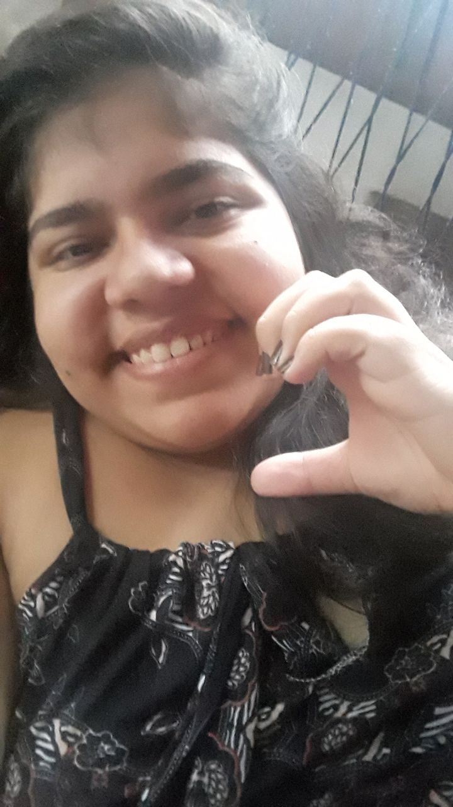
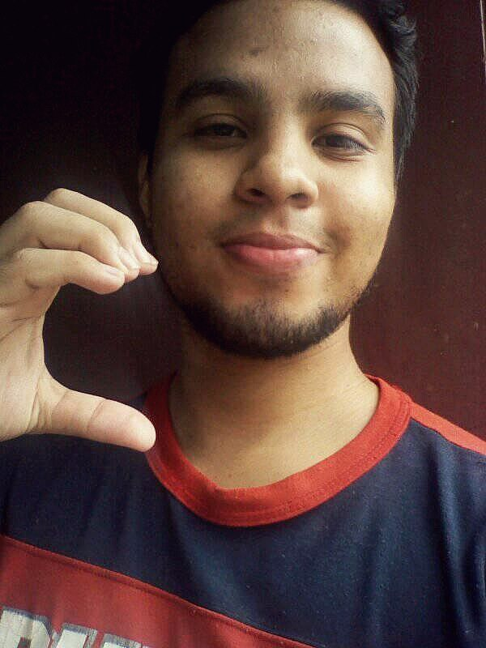

SEMPRE UM, SEMPRE NÓS.
Estava a ver as nossas primeiras conversas aqui e ver como estamos agora é incrível
" Tens umas boas bochechas " foi o primeiro elogio que te disse.

Esta foi a primeira foto que me enviaste
tenho muito carinho por ser a primeira de muitas que me enviaste.
Estou muito, muito apaxionado por voce. TE AMOO!
O CAMINHO

E então eu te enviei outra eu para completar o coração.
É tão incrível e maravilhoso tudo o que temos avançado, tudo o que temos falado. Me faz sentir muito feliz ao saber
que tenho uma pessoa como você ao meu lado.